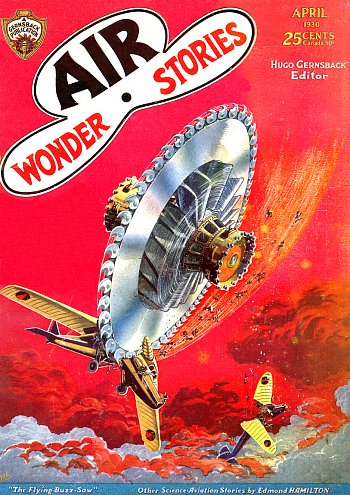
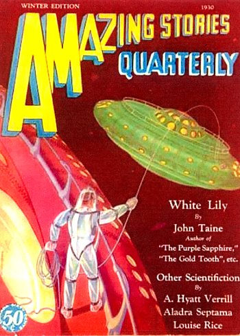

Couverture du n° 10, vol. 1 de Air Wonder Stories Gernsback publications < Collection Les Treece-Sainclair < UFOPOP

Apparition d'un avion mystère "Mystery
Plane at Henderson Harbor", Plattsburg Sentinel de Plattsburg (New York), 4 mars 1930, p. 1.
Les 30 habitants du petit village esquimau d'Angikumi (Canada) disparaissent. Dans
cette région, les conditions de vie sont particulièrement éprouvantes, et l'on retrouve seulement une demi-douzaine
de chiens encore attachés, morts de faim. Les tombes ont même été ouvertes et les cadavres qu'elles contenaient ont
également disparu.
Un appareil qui transporte des hommes d'affaires pénètre dans un nuage sombre - le seul parcourant le ciel. Des
fermiers le voient brusquement en retomber, une aile en partie arrachée. Les réservoirs d'essence s'en détachent et
tombent. Il n'y a eu aucun éclair ni coup de tonnerre, et le drame s'est produit dans le silence. Comme la foudre ne
peut arracher l'aile d'un avion, que s'est-il passé ? L'avion a-t-il rencontré un corps solide à l'intérieur du
nuage sombre, qu'il aurait percuté ?
Le docteur Henry Coanda commence ses travaux sur les formes aérodynamiques lenticulaires.
Couverture du n° 1, vol. 3 d'hiver du trimestriel Amazing Stories Collection Les Treece-Sainclair < UFOPOP

A l'occasion du tremblement de terre de Idu (Japon), on aperçoit des lueurs 1 heure
durant après qu'il se soit déclaré. Elles sont tantôt irradiées comme les rayons du Soleil levant, tantôt comme
les feux d'un projecteur, tant comme des boules de feu, rapportera Frank Lane. On voit aussi des boules de
lumière très brillantes, disposées "en ligne", bleuâtres, jaunes ou violacées. Elles brillent d'un éclat
tellement vif qu'à 50 km environ de l'épicentre, elles paraissent plus brillantes que la Lune ainsi qu'à Tokyo
où de nombreux témoins déclarent qu'ils ont pu discerner des "objets" sous leur éclairage. On distingue ces
lueurs depuis une distance de 110 km.
À Toulx-Sainte Croix Jules B. (42 ans, auteur d'une observation
), rentre chez lui par la route qui contourne une colline par le nord. Soudain il voit sortir
du fossé un petit être qui traverse la route et escalade le bord droit du fossé à la vitesse d'une personne qui
marche normalement. Mais ses jambes sont collées l'une contre l'autre et immobiles. Il glisse sur le sol et se
volatilise instantanément sur place une fois arrivé de l'autre côté "Pleins feux sur la Creuse", LDLN n° 130Catalogue Creuse, Info OVNI, p. 4
En 1930 ou plus tard, un soir sombre Couverture du d'hiver de Science Wonder Collection Les Treece-Sainclair < UFOPOP
À Setermoen (Norvège), Ranveig Alstad observe 2 objets
lumineux faire des cercles au-dessus de Setermoen et LifjellFremover, 1966-12-10UFO-NYT, 1/1967, 10.
Dans les années 1930s Observation en Norvège Øvre SmÅlenene, 1966-11-10, ou plus tard.
{kind=link}
{kind=link}